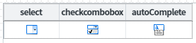

[GridView] 선택형 inputType의 목록 중 특정 항목 비활성화 하기
1개요
GridView의 inputType이 목록 선택형(DropDown) 타입인 경우, 목록의 특정 항목을 비활성화하는 예제입니다. 적용 가능한 inputType은 select, checkcombobox, autoComplete입니다.
2구현된 기능
[기본 설정] 모든 항목 활성화
비활성화 항목 지정
3예제 테스트 방법
각 GridView의 목록 데이터는 하나의 DataList와 연결되어있습니다. 설정에 따라 출력된 목록을 비교합니다.
3.1모든 항목 활성화
- STEP1. 영역 "[기본 설정] 모든 항목 활성화"의 GridView의 셀의 목록을 확장합니다.
컬럼 "select", "checkcombobox", "autoComplete"의 목록을 확장합니다.
- STEP2. 실행 결과를 확인합니다.
목록의 모든 항목이 활성화 되어있습니다.
[브라우저(Chrome) 실행 예시 - 컬럼 select의 목록 확장]
[브라우저(Chrome) 실행 예시 - 컬럼 checkcombobox의 목록 확장]
[브라우저(Chrome) 실행 예시 - 컬럼 autoComplete의 목록 확장]
3.2비활성화 항목 지정
- STEP1. 영역 "비활성화 항목 지정"의 GridView의 셀의 목록을 확장합니다.
컬럼 "select", "checkcombobox", "autoComplete"의 목록을 확장합니다.
- STEP2. 실행 결과를 확인합니다.
목록의 항목 중 "Pear", "Melon"이 비활성화 되어있습니다.
[브라우저(Chrome) 실행 예시 - 컬럼 select의 목록 확장]
[브라우저(Chrome) 실행 예시 - 컬럼 checkcombobox의 목록 확장]
[브라우저(Chrome) 실행 예시 - 컬럼 autoComplete의 목록 확장]
4구현 예시
GridView와 연결된 DataList 생성 및 연결 방법은 생략되었습니다.
4.1GridView 컬럼의 목록과 연결할 DataList 정의하기
GridView의 컬럼 "select", "checkcombobox", "autoComplete"의 목록과 연결할 DataList를 정의합니다.
DataList를 생성하고 ID를 dlt_exam_code로 할당합니다.
필수로 정의될 컬럼은 3가지로 아래와 같습니다. 컬럼의 ID는 환경에 맞게 정의할 수 있습니다.label : 화면에 출력할 레이블
code : 화면에 출력할 레이블의 값
useYN : 비활성화할 조건의 값
(enableColumn 속성에 지정할 컬럼입니다. 이 컬럼의 값이 enableColumnFalseValue 속성에 정의한 값과 동일한 경우 해당 항목은 비활성화됩니다.)
그림 1.웹스퀘어5 SP5 스튜디오의 DataCollection 탭 예시 - 데이터 정의

생성한 DataList에서 사용할 데이터를 할당합니다. 예제에서는 화면이 로딩된 시점(scwin.onpageload)에 데이터를 할당하고 있습니다.
비활성화할 항목은 useYN 컬럼에 N를 정의합니다.scwin.onpageload = function() { //DataList dlt_exam_code에 데이터 할당 dlt_exam_code.setJSON([ {"label":"Apple","code":"01","useYN":"Y"}, {"label":"Pear","code":"02","useYN":"N"}, {"label":"Grapes","code":"03","useYN":"Y"}, {"label":"Watermelon","code":"04","useYN":"N"}, {"label":"Peach","code":"05","useYN":"Y"} ]); };
4.2GridView의 inputType 정의하기
GridView의 컬럼의 inputType을 아래와 같이 정의합니다.
컬럼명 select : inputType="select" id="select"
컬럼명 checkcombobox : inputType="checkcombobox" id="checkcombobox"
컬럼명 autoComplete : inputType="autoComplete" id="autoComplete"
그림 2.웹스퀘어5 SP5 스튜디오의 Design 탭 예시 - GridView

4.3GridView의 각 컬럼의 목록에 DataList 연결하기
스튜디오의 디자인 탭에서 GridView의 컬럼을 더블 클릭하여 목록과 DataList를 연결합니다. (아래의 이미지를 참고하여 설정합니다) 컬럼(select, checkcombobox, autoComplete)의 설정 방법은 동일하여 컬럼 select의 예시만 작성되었습니다.
그림 3.웹스퀘어5 SP5 스튜디오의 Design 탭 예시

그림 4.웹스퀘어5 SP5 스튜디오의 Design 탭 예시 - 목록과 DataList 연결하기
4.4컬럼의 목록 중 특정 항목을 비활성화하기 - 스크립트
원하는 시점에 setColumnEnableColumn method를 이용하여 스크립트에서 설정할 수 있습니다.
//GridView의 컬럼 select에 비활성화 항목 지정하기 //목록과 연결된 DataList의 "useYN" 컬럼의 값이 "N"이면 비활성화 지정 grd_exam2.setColumnEnableColumn("select", "useYN", "N"); //GridView의 컬럼 checkcombobox에 비활성화 항목 지정하기 //목록과 연결된 DataList의 "useYN" 컬럼의 값이 "N"이면 비활성화 지정 grd_exam2.setColumnEnableColumn("checkcombobox", "useYN", "N"); //GridView의 컬럼 autoComplete에 비활성화 항목 지정하기 //목록과 연결된 DataList의 "useYN" 컬럼의 값이 "N"이면 비활성화 지정 grd_exam2.setColumnEnableColumn("autoComplete", "useYN", "N");
5주요 API
setColumnEnableColumn( gridColumnId , enableColumnId , enableColumnFalseValue )
6참고 문서
[웹스퀘어5 SP5 개발 가이드] GridView
링크 : https://docs1.inswave.com/sp5_user_guide/86bdcf48029b958b
[웹스퀘어5 SP5 개발 가이드] GridView inputType에 따른 일부 선택 항목 비활성화하기
링크 : https://docs1.inswave.com/sp5_user_guide/86bdcf48029b958b#1f018c1921f4621e
7참고 동영상
GridView inputType에 따른 일부 선택 항목 비활성화하기
링크 : https://youtu.be/0IybbS4LnxU